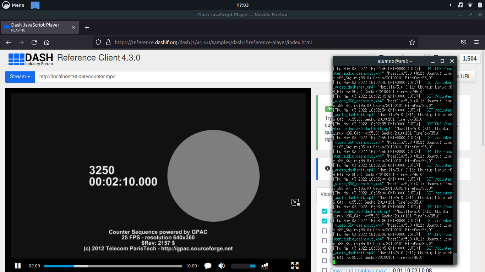

Memoria
Descripción de la práctica
En esta quinta práctica de la asignatura se ha llevado a cabo una pequeña introducción al estándar MPEG-DASH y se ha trabajado con flujos mediante el uso de esta tecnología. Su funcionamiento se basa en la división de los flujos de audio y video en segmentos de muy pequeño tamaño que son transportados mediante HTTP. Una de las características más destacables es el streaming adaptativo: adaptar los flujo de video y audio a las condiciones cambiantes de la red. Para lograr su objetivo, se define un archivo conocido como manifiesto en el que se incluye la información necesaria para la organización de los flujos.
Cuestiones sobre manifiestos
-
¿Cuántas codificaciones de audio distintas puede utilizar el cliente para adaptarse a condiciones cambiantes de la red?:
-
Ambos manifiestos sólo pueden usar 1 codificación de audio.
1 - mp4a.40.5
2 - mp4a.40.29
-
¿Y de vídeo?:
-
Ambos manifiestos pueden usar 1 codificación de video.
1 - avc1.4D401E
2 - avc1.4d401f
-
¿Cuántas resoluciones de vídeo distintas puede usar el cliente? Indica cuáles:
-
El primer manifiesto puede usar sólo 1 de 845x480.
El segundo manifiesto puede usar 3 de 512x288, 768x432 y 1280x720.
Ejercicio 3.3
Una vez instalada y configurada la máquina virtual con Ubuntu así como el servidor web se han realizado una serie de pruebas, creando manifiestos que permitan variar la calidad de video dependiendo de la condición de la red. Si está muy saturada se bajará el video bitrate o si por el contrario se subirá. En las siguientes capturas de pantalla aparecen algunas pruebas realizadas con distintos bitrates y uno adaptativo.

Ejercicio 3.4
Una vez finalizadas las pruebas sirviendo el video counter, se ha procedido a servir otro video que puede suponer un caso más complejo: el trailer de la película Sintel. Para ello se ha descargado el trailer en formato mp4 en 3 calidadesdiferentes (480, 720 y 1080).
Lo siguiente a realizar será preparar dicho video para distribuirlo mediante streaming.
Inicialmente se ha procedido a generar el manifiesto a partir de uno de los videos. Al realizar esto no se muestra ningún vídeo de forma correcta y la consola de Javascript del navegador muestra un error.
Tras realizar varias pruebas se alcanzó una versión final con 3 calidades distintas. Esto es posible observrlo en la siguiente imagen donde el reproductor permites escojer una resolución.
Ejercicio 1
En este ejercicio se ha creado una página web que incluye la biblioteca dash.all.min.js y un elemento vídeo con el identificador player. Por defecto se muestra el manifiesto del trailer empleando las tres calidades, en caso de querer cambiar el manifiesto a utilizar solamente es necesario modificar la URL en el archivo prac5-1.js.
Ejercicio 2
Este último ejercicio es una copia de la página web creada en la sesión 3 y correspondiente con el prac3-2.html donde se empleaba una textura de video. En este caso hay que hacer que en la textura se cargue el video en streaming de manera similar al ejercicio anterior.
Dificultades encontradas
En general no he encontrado ninguna dificultad reseñable en la práctica, sólo destacar que el sitio web de donde se descargaba el segundo manifiesto daba un fallo de seguridad por el tema de certificados caducados y en el último ejercicio se podría haber escalado el tamaño de la
textura respecto a la resolución del video.
Reseñar que los manifiestos utilizados en la máquina virtual fueron incluidos en los ficheros subidos al campus de la práctica. Se encuentran dentro de la carpeta /mv.